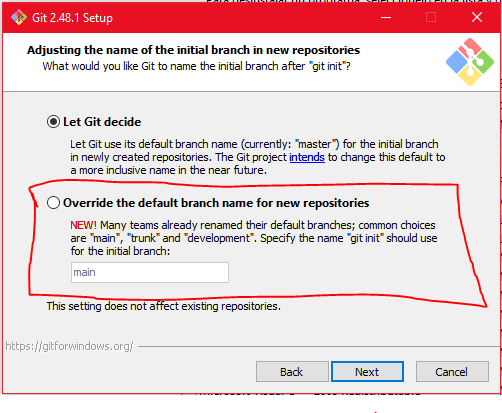

Git y GitHub
Git registra cada cambio en tu código como una fotografía en el tiempo. GitHub guarda esas fotografías en la nube y te permite colaborar con otros.
¿Qué son Git y GitHub?
Git es un sistema de control de versiones distribuido. Funciona localmente en tu computadora y lleva un registro exacto de cada modificación que haces en tus archivos. Si algo se rompe, puedes volver a cualquier punto anterior.
GitHub es una plataforma en la nube que aloja repositorios Git. Además del respaldo remoto, ofrece herramientas para colaborar: revisión de código, gestión de tareas y documentación.
Piensa en Git como el historial de guardado de un videojuego: puedes guardar en cualquier momento y cargar cualquier guardado anterior. GitHub es el servidor en la nube donde subes esos guardados para no perderlos y para que otros jugadores los descarguen.
Instalación
El proceso de instalación varía según el sistema operativo. Elige el tuyo:
Descarga el instalador oficial desde git-scm.com y ejecútalo. Durante la instalación, acepta las opciones predeterminadas. Al finalizar tendrás disponible Git Bash, una terminal que usarás para todos los comandos de este módulo.

La forma más sencilla en macOS es instalar Git a través de Homebrew. Si no tienes Homebrew, instálalo primero con el siguiente comando en tu terminal:
/bin/bash -c "$(curl -fsSL https://raw.githubusercontent.com/Homebrew/install/HEAD/install.sh)"Una vez que tengas Homebrew, instala Git con:
brew install gitPara verificar que la instalación fue exitosa:
git --version
# git version 2.x.xEn la mayoría de las distribuciones Linux, Git se instala con el gestor de paquetes del sistema. Usa el comando correspondiente a tu distribución:
# Ubuntu / Debian
sudo apt update && sudo apt install git
# Fedora
sudo dnf install git
# Arch Linux
sudo pacman -S gitPara verificar que la instalación fue exitosa:
git --version
# git version 2.x.xConfiguración inicial
La primera vez que usas Git en tu computadora debes decirle quién eres. Esta información queda registrada en cada commit que hagas. Esto aplica igual para Windows (Git Bash), macOS y Linux.
git config --global user.name "Tu Nombre"
git config --global user.email "tu@email.com"Las comillas son obligatorias para que Git interprete el nombre como una sola cadena.
Llave SSH
Una llave SSH permite conectarte a GitHub de forma segura sin tener que escribir tu usuario y contraseña cada vez que haces un push o pull. Se recomienda el algoritmo ed25519 por ser más moderno, seguro y rápido.
Paso 1 — Generar la llave
En la terminal (Git Bash en Windows, o la terminal nativa en macOS/Linux), ejecuta el siguiente comando reemplazando el correo por el tuyo:
ssh-keygen -t ed25519 -C "correo@ejemplo.com"El sistema hará tres preguntas:
- Archivo donde guardar la llave: presiona
Enterpara aceptar la ruta por defecto (~/.ssh/id_ed25519). - Passphrase: puedes dejarlo en blanco presionando
Enterdos veces, o escribir una contraseña para mayor seguridad.
Paso 2 — Iniciar el agente SSH y agregar la llave
El agente SSH es un programa que corre en segundo plano y administra tus llaves para que no tengas que escribirlas cada vez.
Inicia el agente:
eval "$(ssh-agent -s)"Agrega tu llave privada al agente:
ssh-add ~/.ssh/id_ed25519Paso 3 — Vincular la llave con GitHub
Para que GitHub reconozca tu computadora necesitas copiar el contenido de tu llave pública y pegarlo en tu cuenta.
Copiar la llave pública:
cat ~/.ssh/id_ed25519.pubSelecciona y copia todo el texto que aparece (comienza con ssh-ed25519).
Agregarla en GitHub:
- Inicia sesión en GitHub.
- Haz clic en tu foto de perfil (esquina superior derecha) → Settings.
- En el menú lateral izquierdo selecciona SSH and GPG keys.
- Haz clic en el botón verde New SSH key.
- En Title pon un nombre descriptivo (ej.
Laptop Dell,MacBook Universidad). - En Key type deja Authentication Key.
- En Key pega la llave que copiaste.
- Haz clic en Add SSH key.
Probar la conexión:
ssh -T git@github.comLa primera vez te preguntará si confías en la huella digital de GitHub. Escribe yes y presiona Enter. Si todo salió bien verás:
Hi username! You've successfully authenticated, but GitHub does not provide shell access.Flujo básico
Iniciar un repositorio
Navega a la carpeta de tu proyecto y ejecuta git init. Esto crea una carpeta oculta .git que contiene toda la información de control de versiones.
cd MiProyecto
git init
# Initialized empty Git repository in .../MiProyecto/.git/Agregar archivos al área de preparación
Antes de hacer un commit debes indicarle a Git qué archivos quieres incluir. Esto se llama staging.
git add archivo.py # un archivo específico
git add archivo.py otro.py # varios archivos
git add . # todos los archivos del directorio actualHacer un commit
Un commit es una instantánea permanente de los archivos en el área de preparación. El mensaje debe describir qué cambió.
git commit -m "Agrega la función de cálculo de promedio"Ver el estado del repositorio
git status muestra qué archivos fueron modificados, cuáles están en staging y cuáles no han sido seguidos aún.
git statusVer el historial de commits
git log lista todos los commits con autor, fecha y mensaje. Usa las flechas para navegar y q para salir.
git logConectar con GitHub
Para crear un repositorio en GitHub: inicia sesión, haz clic en New, elige un nombre y crea el repositorio. Luego conecta tu repositorio local con el remoto:
git remote add origin https://github.com/usuario/nombre-repo.gitPara subir tus commits al repositorio remoto:
git push origin mainEjemplo Primer push desde cero
Secuencia completa para crear y subir un repositorio nuevo:
mkdir MiProyecto && cd MiProyecto
git init
touch README.md
git add README.md
git commit -m "Primer commit"
git remote add origin https://github.com/usuario/MiProyecto.git
git push -u origin mainLa bandera -u establece origin main como destino predeterminado, así los próximos git push no necesitan argumentos.
Ciclo de vida de un commit
El flujo que repetirás en cada sesión de trabajo es siempre el mismo:
- Modificar — editas o creas archivos en tu proyecto.
- Agregar — seleccionas los cambios con
git add. - Confirmar — creas la instantánea con
git commit. - Subir — sincronizas con GitHub usando
git push. - Obtener — si trabajas en equipo, bajas los cambios de otros con
git pull origin main.
Más detalle ¿Por qué dos pasos (add + commit)?
El área de preparación (staging area) te permite elegir exactamente qué cambios incluir en cada commit, aunque hayas modificado varios archivos. Esto facilita hacer commits pequeños y descriptivos en lugar de commits gigantes difíciles de entender. Por ejemplo, puedes modificar tres archivos pero hacer dos commits separados: uno con los cambios lógicos de una función y otro con la corrección de un bug.